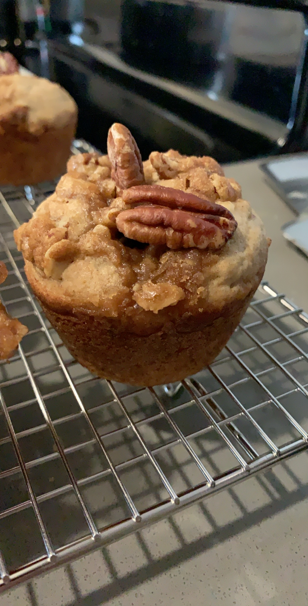

Banana Nut Crunch Muffins
Back to Homepage
I did not create this recipe but instead have sourced it from a
fantastic website with many ABSOLUTELY DELICIOUS recipes which you should
100% check out!
Ingredients
Muffins
- 1 1/2 cups, flour
- 1/2 tsp, cinnamon
- 1 tsp, baking powder
- 1 tsp, baking soda
- 1/4 tsp, salt
- 3 ripe bananas (mashed)
- 2/3 cup, sugar
- 1 egg
- 1 tsp, vanilla extract
- 1/2 cup, butter (melted)
Crunch Topping
- 1/3 cup, brown sugar (packed)
- 2 TBSP, flour
- 2 TBSP, butter
- 2 TBSP, oats
- 1/3 cup, pecans (chopped)
Instructions
Using the muffin ingredients
- Preheat oven to 375 degrees F. Line a muffin pan with paper liners.
- Combine flour, cinnamon, baking soda, baking powder, and salt in a large bowl
- In a separate bowl, mix together the bananas, sugar, egg, vanilla, and butter
- Add the flour mixture to the banana mixture until just combined
- Divide batter evenly into the 12 muffin cups
Using the crunch topping ingredients
- In a small bowl, combine flour, brown sugar, and butter until mixed
- Stir in oats and pecans
- Divide mixture evenly over batter in muffin cups
Baking
- Bake for 18-20 minutes or until a toothpick comes out clean
